Overview
What if the ecosystem could ask for help — and we could actually respond? Nexus starts from a simple but unsettling observation: the natural world communicates constantly, in chemical languages we can't perceive. Climate change is making those signals more urgent. But we're not listening, partly because we don't know how.
Nexus is an interactive installation set in the year 2150, imagining a future where humans and non-human entities have learned to communicate through chemistry. A visitor kneels before the device, breathes into it, and donates their biological chemicals to a collective effort to fight rising temperatures — initiated by bacteria, translated by AI, completed by mammals.
I was central to the concept and idea generation phase. On the technical side, Duru and I led the TouchDesigner and Arduino work. I also took the lead on writing the visitor narrative — translating a complex speculative idea into something immediate and accessible.
- TouchDesigner
- Arduino
- Figma
- Illustrator / Photoshop
- Premiere Pro
- Claude LLM
Design Process
The following graph shows the process we followed to reach our final result.
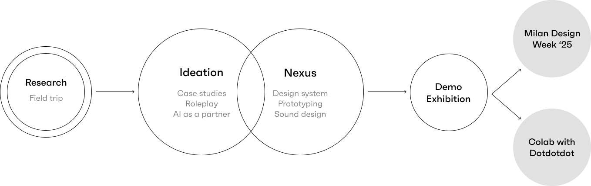
Research
We started with field research, visiting La Goccia forest, trying to notice and attune to the entities of that natural environment through pictures and sketches.
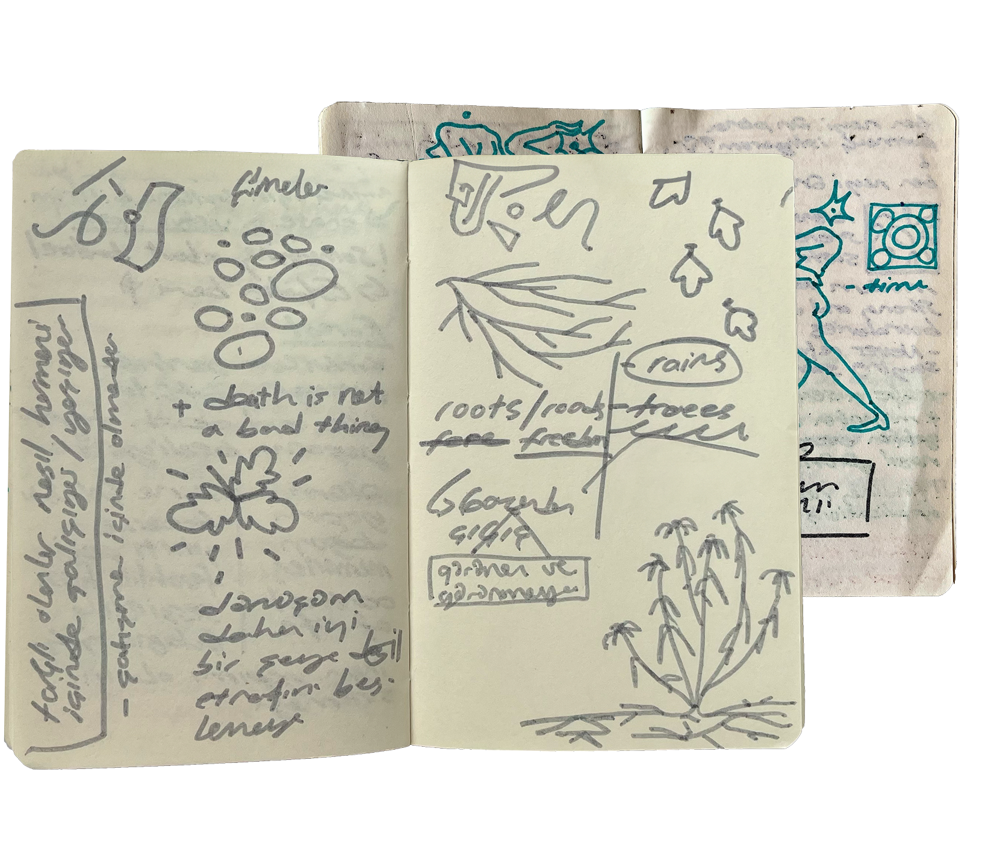
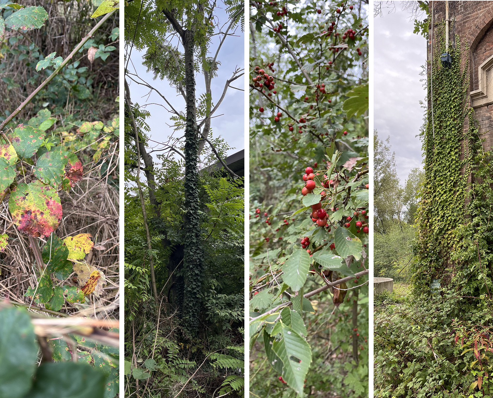
From this field trip we identified five core entities for our project:
Role Playing
To understand the connections within these entities, we did role playing where each designer embodied one entity and asked each other questions to better understand their points of view.
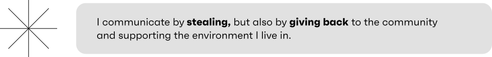
I communicate by stealing, but also by giving back to the community and supporting the environment I live in.
We communicate with electrical impulses, we form a collective brain, which allows us to communicate even if we are apart, as one.
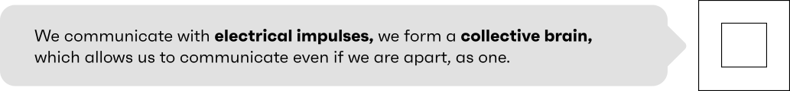
My favorite seasons are autumn and summer, where I can feel the rain and I try to help others by guiding them to water.
We feel the scorching heat, every day it gets harder for us to move around and find enough water to survive.
Ideation
We used Claude LLM and asked it to act as Fungi and then Bacteria. We realized they communicate in a language composed of chemical compounds. This became our main inspiration behind creating Nexus.
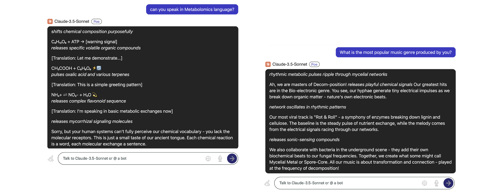
Nexus
After using AI as a speculative partner, we discovered the imperceptible languages of different beings, and created Nexus — a chemical collection and distribution hub in the year 2150.
Due to rising temperatures caused by climate change, Bacteria calls for help and initiates this process. The AI translates bacteria's language and invites mammals to contribute their chemicals to fight against the unbearable heat together.
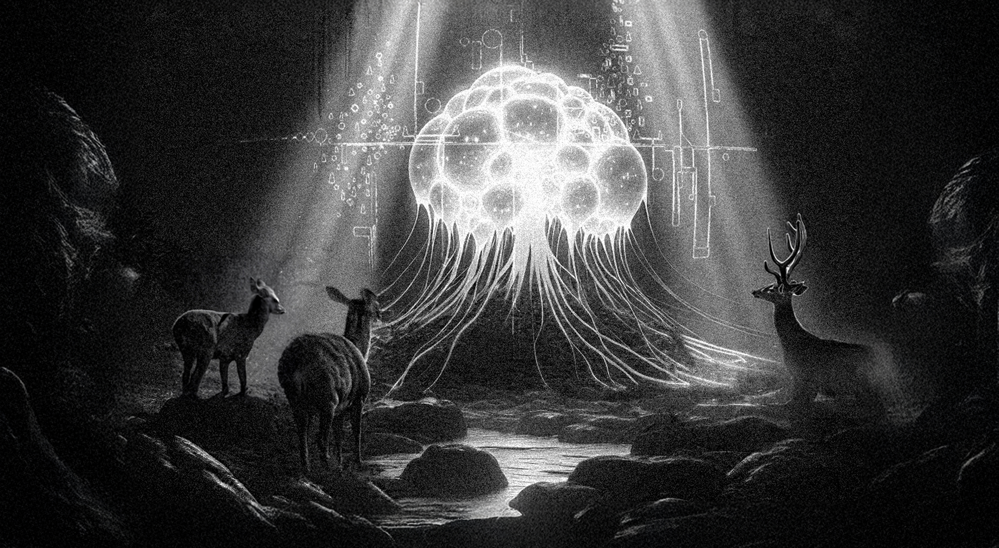
Prototyping
We built Nexus using Christmas ornaments and modelling clay, adding polystyrene balls inside which float when a user breathes into it.
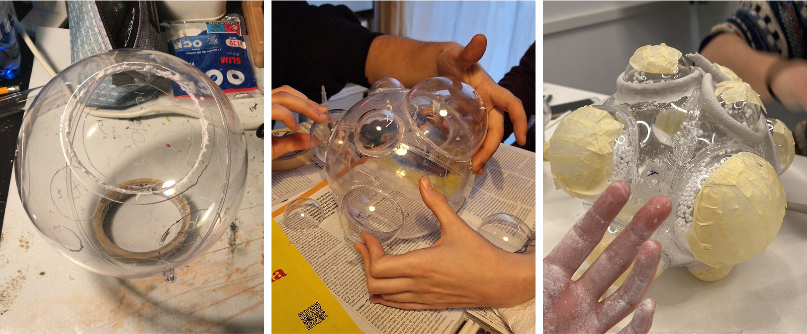
Inspired by rituals around the world, we imagined an interaction where the user kneels to interact with Nexus, with different mammals' handprints directing where to place their hands.
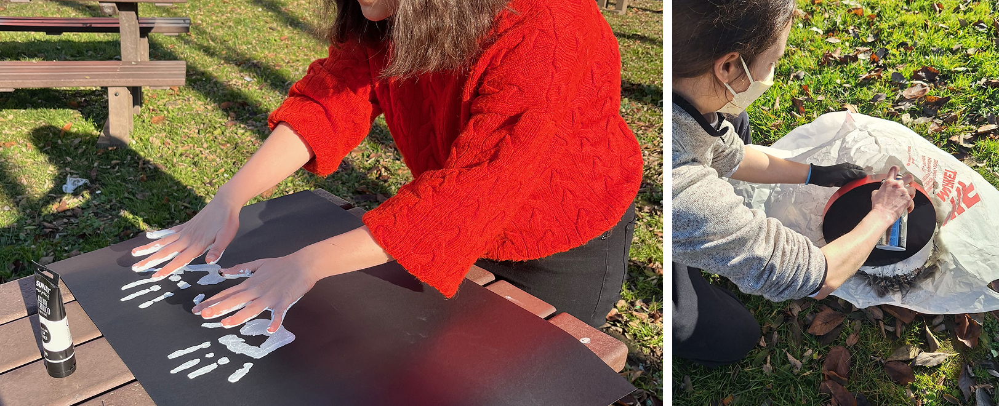
A sound sensor and Arduino detected the breath, connected to TouchDesigner to enable responsivity and interactivity.
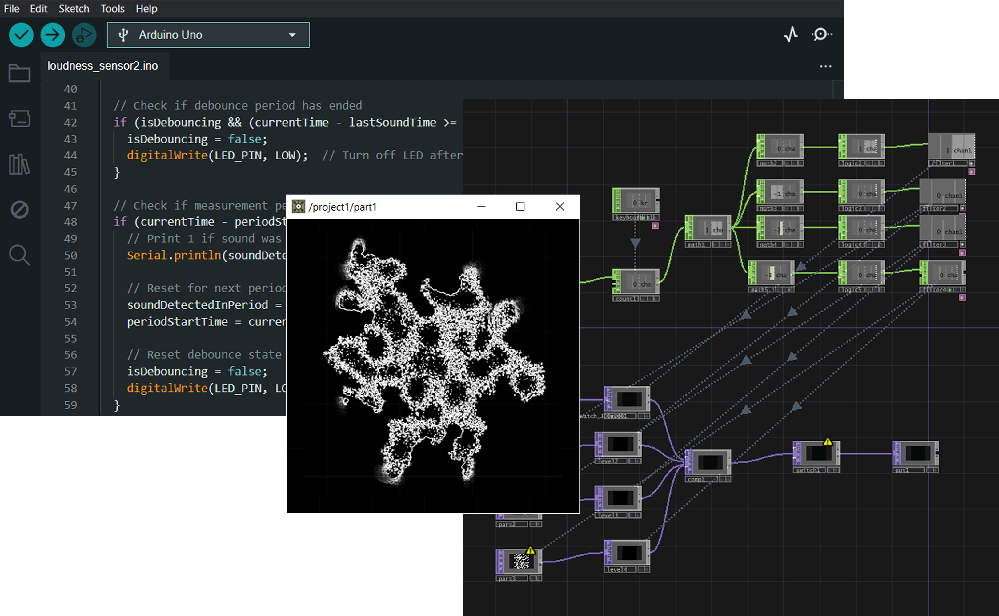
Through the interaction, the user donates their chemicals by breathing into the collector. They can see their contribution through simultaneous projections on the walls and ground.
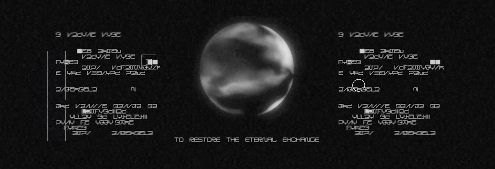
Music
To increase the immersivity of the exhibition, we created an ambient soundtrack using FL Studio:
Demo Exhibition
Nexus was showcased at the Bovisa Campus of Politecnico di Milano, where we got feedback from design students and faculty.
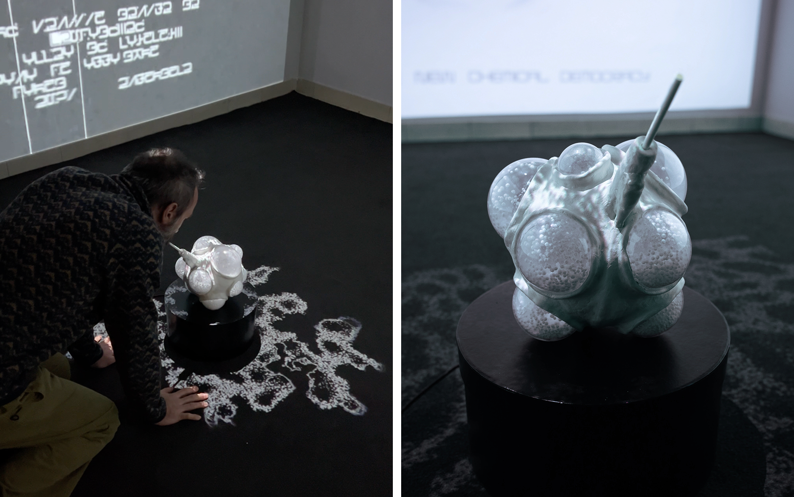
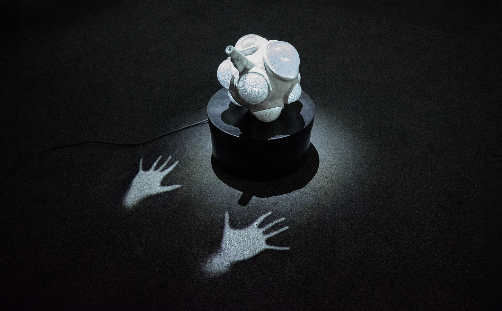
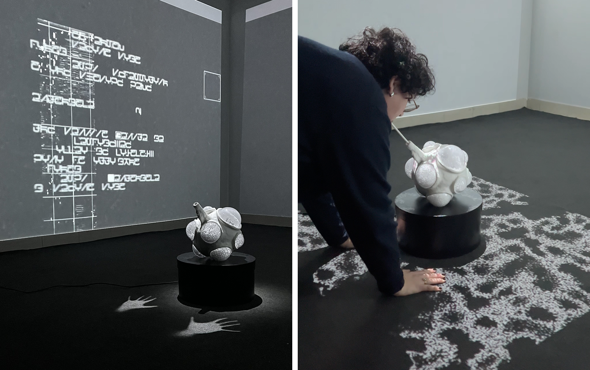
Reflection
Nexus was the most conceptually ambitious project I've worked on, and the one that pushed me furthest outside my comfort zone — both technically and intellectually. Working in TouchDesigner and Arduino to build a responsive, sensor-driven installation was genuinely new territory for me, and getting the breath detection to reliably trigger the projections required a lot of iteration that never showed up in the final piece.
Writing the visitor narrative was unexpectedly one of the most valuable parts of the project. Distilling a speculative concept rooted in microbiology, climate science, and more-than-human design into a paragraph that a stranger could understand in 30 seconds forced me to be ruthless about what actually mattered.
The project left me with a lasting interest in design that takes non-human perspectives seriously. More-than-human design isn't just an academic framework — it's a genuinely different way of asking "who is this for?"
Credits
Professors: Elisa Giaccardi, Francesco Vergani
Team: Alessandra Sgariglia, Duru Erdem, Erika Caffo, Fabio Sannino, Yaren Yavuz
Special thanks to: Matteo Lo Valvo